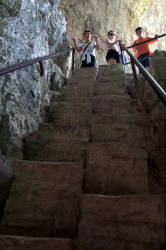
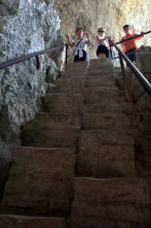

Plitvička Jezera
The Lakes of Plitvitza - Plitvice Lakes National Park
Useful Information
| Location: | Close to the Bosnia-Hercegovina border. 140 km south of Zagreb. |
| Open: |
Spring daily 7-19, last entry 16. Summer daily 7-20, last entry 17. Autumn daily 7-19, last entry 16. Winter daily 7-15, last entry 13 [2024] |
| Fee: |
NOV to MAR:
Adults EUR 10, Children (7-18) EUR 4, Children (0-6) free, Students EUR 6, Disabled free. Groups (15+): Adults EUR 9.50, Children (7-18) EUR 3.50, Students EUR 5. APR to MAY: Adults EUR 23, Children (7-18) EUR 6, Children (0-6) free, Students EUR 14, Disabled free. Groups (15+): Adults EUR 21, Children (7-18) EUR 5, Students EUR 13. JUN to SEP: Full Day: Adults EUR 40, Children (7-18) EUR 15, Children (0-6) free, Students EUR 25, Disabled free. Groups (15+): Adults EUR 35, Children (7-18) EUR 13, Students EUR 24. Half Day, from 16: Adults EUR 25, Children (7-18) EUR 9, Children (0-6) free, Students EUR 15, Disabled free. Groups (15+): Adults EUR 25, Children (7-18) EUR 8, Students EUR 15. OCT: Adults EUR 23, Children (7-18) EUR 6, Children (0-6) free, Students EUR 14, Disabled free. Groups (15+): Adults EUR 21, Children (7-18) EUR 5, Students EUR 13. [2024] |
| Classification: |
 Rimstone Pool Rimstone Pool
 tufa caves. tufa caves.
|
| Light: | bring torch |
| Dimension: | A=417 m to 1,280 m asl |
| Guided tours: | self guided |
| Photography: | allowed |
| Accessibility: | no |
| Bibliography: |
Marko Miliša, Marija Ivković (2023):
Plitvice Lakes,
Springer Water (SPWA).
DOI
pdf
|
| Address: |
Nacionalni Park Plitvička Jezera, Znanstveno - stručni centar "Dr. Ivo Pevalek", 53231 Plitvička Jezera, Tel: +385-53-751-015, Fax: +385-53-751-014.
E-mail: |
| As far as we know this information was accurate when it was published (see years in brackets), but may have changed since then. Please check rates and details directly with the companies in question if you need more recent info. |
|
History
| 1777 | first mentioned by the Otočac priest Dominik Vukasović. |
| 08-APR-1949 | proclaimed a national park. |
| 1979 | inscribed on the UNESCO World Heritage List. |
| 1992 | placed on the List of World Heritage in Danger because of the war. |
| 1996 | removed from the List of World Heritage in Danger. |
| JAN-1997 | the Parliament of Croatia expanded the borders of the Park. |
Description
The lakes of Plitvitza are a famous and well visited tourist destination. A wide valley with numerous subsequent green-blue lakes, connected by waterfalls and white water. This location is very famous, especially in Germany, because of a 1960s western movie. The movie Treasure of Silver Lake (Der Schatz im Silbersee) was a German/Yugoslavian co-production with Lex Barker, Herbert Lom, and Pierre Brice. The original book was written by Karl May, a popular German author of adventure stories in the 19th century.
And still, many visitors think about silver lakes when they see this mystic and beautiful place. Today it is a nature reserve giving home to many rare animals, including the famous last brown bears of western Europe. But we will concentrate on the geologic features of this park.
The area around these lakes is a bare karst area. The water in the lakes is karst water, very rich in dissolved limestone. When it resurges at the upper end of the valley, it starts to loose carbon dioxide (CO2), the gase which enables the water to solute the limestone. As soon as a little carbon dioxide is gone, the respective amount of limestone is deposited. Algae and moss helps in consuming carbon dioxide from the water for their photosynthesis. The limestone is deposited in the whole valley, but moss is able to hold the limestone and gets incrusted after some time, just to grow over the limestone again. This processes create a typical effect, the formation of huge barriers of limestone across the valley, which dam the water and form the lakes. The water flows over the dam depositing limestone on the top of it.
This process leads to famous deposits of sweet water limestone, also called tufa or travertine. The rims may encapsulate blisters of air which are called tufa caves, primary caves which are created with the surrounding rock.
 

- See also
 Subterranean World Heritage List
Subterranean World Heritage List Search Google for "Plitvice Lakes"
Search Google for "Plitvice Lakes" Google Earth Placemark
Google Earth Placemark Plitvice Lakes - Wikipedia
Plitvice Lakes - Wikipedia Plitvice Lakes National Park, official site. (
Plitvice Lakes National Park, official site. (
 )
)- Der Schatz im Silbersee (1962) at imdb.
- Plitvice Lakes National Park, UNESCO World Heritage List
- Plitvice Lakes National Park
- Plitvice Lakes National Park
- The World's Six Most Beautiful Lakes | All That Is Interesting (visited: 18-NOV-2011)
 Index
Index Topics
Topics Hierarchical
Hierarchical Countries
Countries Maps
Maps Search
Search{kind=link}
{kind=link}
{kind=link}
{kind=link}
{kind=link}
{kind=link}
{kind=link}
{kind=link}
{kind=link}
{kind=link}
{kind=link}